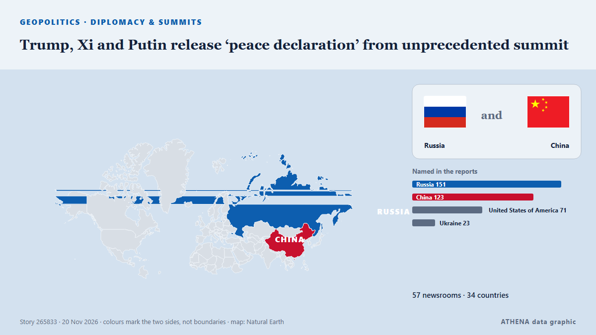

Trump, Xi and Putin release ‘peace declaration’ from unprecedented summit

By Jarrett Renshaw and Trevor Hunnicutt SHENZHEN, China, Nov 19 (Reuters) - Chinese President Xi Jinping and his US and Russian counterparts Donald Trump and Vladimir Putin agreed on a symbolic… from Al-Monitor
What changed 31 new reports from 28 outlets in the last 24 hours.
See the sources ›Evidence: Strong
Reported independently by 57 outlets in 34 countries since 19 Nov, first by Al-Monitor; coverage is fading. ATHENA rates the risk elevated (5.8/10), driven mainly by the severity of the harm described and its geographic and sector reach. Confidence is 92% (high), with 57 independent outlets corroborating it and an average source reliability of 75%. Outlets by country: Russia (5), United Kingdom (4), United States (3). Coverage: 19 Nov to 20 Nov, 25 hours.
Why it matters: Security and diplomatic developments can shift alliances, trade and markets well beyond the countries directly involved.
What changed: 31 new reports from 28 outlets in the 24 hours to 20 Nov.
First reported as: Putin, Trump, Xi adopt Peace Declaration
AutomatedSelected, grouped and scored by ATHENA's published method from 34 independent outlets. The headline is the outlet's own; ATHENA's sentences follow fixed patterns - no generative AI writes them. How it works →
How to read this page
- What you are reading
- 57 outlets in 34 countries reported this event. The reports below are listed in the order they appeared; each headline opens the original article. ATHENA writes none of the reports.
- Our reading
- For the record — The reports describe a completed, domestic, commercial or personal matter. We list it so you can see who reported it and when. We are not tracking a risk of wider conflict here.
- How much evidence
- Strong Many independent outlets in many countries describe the same event.
After repeats, off-topic items and stale reports are removed, 27 of the 40 listed reports are counted; 98% of the headlines match the event.
- What this does not mean
- ATHENA measures how an event is reported, not whether it is true. This is not a forecast, a judgement on who is right, or advice.
- What would change it
- Reports from other independent outlets showing a different development, or a firm confirmation or denial from an official source.
Reading R2 · refreshed with every update of this page. ATHENA has not yet published a track record for these readings; when it does, it will be linked here.
At a glance
Selected, scored and written by ATHENA's published methodology. No editor intervenes in individual events. How this is produced ›
| 19 Nov 04:30 UTC | 2 |
|---|---|
| 19 Nov 06:30 UTC | 0 |
| 19 Nov 08:30 UTC | 4 |
| 19 Nov 10:30 UTC | 12 |
| 19 Nov 12:30 UTC | 11 |
| 19 Nov 14:30 UTC | 6 |
| 19 Nov 16:30 UTC | 6 |
| 19 Nov 18:30 UTC | 2 |
| 19 Nov 20:30 UTC | 4 |
| 19 Nov 22:30 UTC | 5 |
| 20 Nov 00:30 UTC | 1 |
| 20 Nov 02:30 UTC | 2 |
| 20 Nov 04:30 UTC | 3 |
| 20 Nov 06:30 UTC | 0 |
| 20 Nov 08:30 UTC | 3 |
| 20 Nov 10:30 UTC | 2 |
| 20 Nov 12:30 UTC | 4 |
| 20 Nov 14:30 UTC | 0 |
| 20 Nov 16:30 UTC | 1 |
| 19 Nov 12:34 UTC | 0.0 |
|---|---|
| 19 Nov 14:50 UTC | 1.1 |
| 19 Nov 16:05 UTC | 3.9 |
| 19 Nov 16:28 UTC | 4.1 |
| 19 Nov 18:07 UTC | 5.5 |
| 20 Nov 02:32 UTC | 5.7 |
| 20 Nov 13:30 UTC | 6.3 |
| 20 Nov 21:32 UTC | 5.8 |
| 20 Nov 21:32 UTC | 5.8 |
Why these numbers
Importance
How widely and how prominently the story is reported.
Risk
What the reports describe, scored for possible harm. It is not a forecast.
Confidence
How well independent outlets support the story.
The reporting — who reported it, and when
headline as published · opens the original- Al-Monitor · United StatesChina, US, Russia issue 'Declaration toward Peace' after first summit
- Al-Monitor · United StatesTrump, Xi and Putin release 'peace declaration' from unprecedented summit
- The National · United Arab EmiratesTrump, Putin and Xi issue 'peace declaration' after meeting in China
- Kyiv Independent · UkraineTrump joins Putin, Xi in signing 'declaration of peace' as summit largely sidesteps Ukraine
- The Irish News (Belfast) · United KingdomWe are really making history, says Trump as meeting with Xi and Putin begins
- The Moscow Times · RussiaChina and Russia Release ‘Peace Declaration’ After Trump, Xi, Putin Meeting
- The Irish News (Belfast) · United KingdomWe are really making history, says Trump as he holds meeting with Xi and Putin
- APA (English) · AzerbaijanRussia, China and US leaders adopt Declaration on Peace - UPDATED
- NEWS.am (English) · ArmeniaPutin, Trump, Xi adopt declaration on peace
- TASS (English) · RussiaDeclaration by Putin, Trump, Xi Jinping following meeting published
- TASS (English) · RussiaPutin, Xi, Trump reaffirm commitment to strategic stability — peace declaration
- CGTN (World) · ChinaFull text: China-Russia-US Heads of State Declaration toward Peace
- The National · United Arab Emirates'Nuclear war cannot be won': Full text of China, Russia and US 'peace declaration'
- TASS (English) · RussiaPutin, Trump, Xi adopt Peace Declaration
- Times of India · India'Declaration for Peace': Trump, Xi & Putin take 4 big pledges at historic trilateral
- Free Malaysia Today · MalaysiaChina, Russia release ‘peace declaration’ after Trump, Xi, Putin meeting
- Oman Observer · OmanChina, US, Russia leaders issue ‘peace declaration’
- TASS (English) · RussiaPutin, Xi, Trump issue peace declaration after their historic trilateral meeting
- Ukrinform (English) · UkraineChinese, US, Russian leaders adopt 'peace declaration,' make no mention of Ukraine
- Vanguard · NigeriaChina, US, Russia issue ‘peace declaration’ after first summit
- DW English · GermanyAPEC summit: Trump, Xi, Putin talks end with 'peace declaration'
- The New Arab · INTChina, US, Russia issue 'peace declaration' after first summit
- TRT World · TurkeyChina, Russia, US issue four-point declaration after 'historic summit'
- France 24 English · FranceWhat to know about Xi, Putin and Trump's historic trilateral summit
- Kyiv Post · UkrainePutin, Trump and Xi Call for UN Reform, Nuclear Dialogue in ‘Declaration on Peace’
- Democracy Now! · United StatesA New International Order? Xi, Trump & Putin Hold Historic Trilateral Summit in China
- Scroll.in · IndiaTrump, Putin and Xi say nuclear war ‘must never be fought’ in joint peace declaration
- Deccan Herald · IndiaChina, US and Russia conclude landmark 90-min trilateral meeting with 'Declaration Towards Peace'
- Ada Derana · Sri LankaChina and Russia release 'peace declaration' after Trump, Xi, Putin meeting
- Buenos Aires Times · ArgentinaChina, US, Russia issue 'peace declaration' after first summit
- Foroyaa · GambiaChina, Russia and US issue four-point declaration after Shenzhen summit
- Euractiv · BelgiumChina, US, Russia issue ‘Declaration toward Peace’ after first summit
- Dawn · PakistanUS, China, Russia sign ‘peace declaration’ after historic Trump, Xi, Putin meeting
- AzerNews · AzerbaijanUS, China, Russia agree to reform UN
- to vima · GreeceTrump, Xi, Putin Issue ‘Peace Declaration’ With Few Commitments
- Taipei Times · TaiwanChina, Russia release ‘peace declaration’
- The Guardian · United KingdomChina, Russia and US agree peace declaration with no mention of Ukraine and Iran wars
- BBC News · United KingdomBBC correspondents discuss what Trump, Xi and Putin got out of historic talks
- Arminfo · ArmeniaPutin, Trump and Xi Jinping adopted a joint declaration on peace following their meeting in Shenzhen
- FBC News · FijiTrump, Xi and Putin release ‘peace declaration’ from unprecedented summit